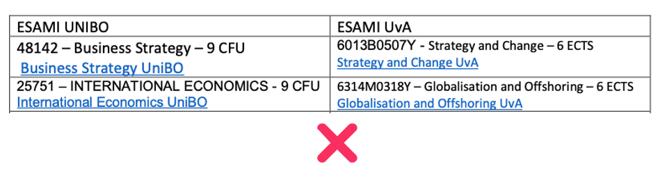

Erasmus+ studio 2024/25
Meeting informativo Bontempi e Franzoni
Dipartimento di Scienze Economiche
aprile 2024
Di che si parla oggi
Informazioni generali sulla procedura di application
Redazione e approvazione del learning agreement
Q&A
Trovare info: il sito Unibo
Trovare info: siti delle Università partner
- Visitare la sezione incoming exchange students
- Spesso distinta dalla sezione international students, che si riferisce a studenti stranieri iscritti a un corso di studi dell’Università partner.
- Verificare quali corsi sono accessibili agli exchange students.
- Necessario per redigere il learning agreement.
Trovare info: siti delle Università partner
Esempio: Norwegian School of Economics
https://www.nhh.no/en/for-students/international-opportunities/exchange/incoming-exchange
Il supporto di Unibo
- Collaboratori di Franzoni e Bontempi:
Nicola Campigotto, Niccolò Fabbroni
Assistenza via email e, se necessario, Microsoft Teams.
Contattare per:
- Scelta degli esami, conversioni dei voti, redazione e modifica del learning agreement, estensione periodo di scambio, priority letters.
Il supporto di Unibo (2)
- Ufficio Mobilità Internazionale: dott.ssa Irene Terracina, didatticasociale.mobility@unibo.it
- Sportello virtuale su Microsoft Teams: http://tinyurl.com/zumbn9ay
- Orario di ricevimento: martedì 10.00-11.30; mercoledì 14.30-15.30; venerdì 10.00-11.30.
- Contattare per: tutte le questioni amministrative non riguardanti la scelta e conversione degli esami (firma delle application, caricamento del learning agreement, gestione del transcript of records, …)
Il supporto di Unibo (3)
- Aform Settore accordi e mobilità Erasmus+ UE, Ufficio mobilità per studio: erasmus@unibo.it
- Sportello: Palazzina della Viola, via Filippo Re 4.
- Recapiti telefonici: 051 20 99357 (99837, 99350, 88477, 82023).
- Orari: lunedì, mercoledì e venerdì: 10.00-12.00; martedì e giovedì: 14.30-16.30.
- Contattare per: questioni relative a pagamento delle borse, visti e altri certificati, invio delle nomine, estensione e riduzione del periodo di scambio, corso OLS.
Il supporto di Unibo: raccomandazioni
Scrivete solo dalla casella istituzionale @studio.unibo.it.
Specificate corso di laurea, anno di iscrizione, sede di destinazione, periodo di scambio (semestre o anno).
A seconda del problema, scrivete all’indirizzo competente. Non indirizzate le comunicazioni a tutti gli uffici contemporaneamente!
üìÜ Date importanti
Fino al 30 giugno: in caso di rinuncia al posto di scambio, questo verrà riassegnato ad altri studenti idonei.
Il periodo di scambio deve svolgersi entro il 31 luglio 2025.
Info utili
Lo scambio ha una durata minima?
Sì: almeno 60 giorni. Non rispettare questo vincolo comporta la perdita dello status di studente Erasmus+ e la restituzione della borsa.
Potrò ridurre la durata dello scambio?
Sì, fermo restando il limite di cui sopra.
- Occorrerà comunicarlo all’Università partner, all’Ufficio mobilità Unibo e ai collaboratori del docente per eventuali modifiche del learning agreement.
- La riduzione della durata dello scambio comporterà la decurtazione della borsa per il periodo non svolto.
Info utili (2)
- È previsto un minimo di attività che occorre sostenere?
- Minimo attività: 1
- Minimo crediti: 4 CFU/ECTS fino a 5 mesi di scambio, 8 CFU/ECTS oltre i 5 mesi
- Non rispettare questo vincolo comporta la perdita dello status di studente Erasmus+ e la restituzione della borsa.
Info utili (3)
Potrò estendere la durata dello scambio?
Sì, ottenendo il permesso dell’Università partner e fermo restando il limite dei 12 mesi complessivi per ciclo di studi.
- Occorrerà comunicarlo all’Ufficio mobilità Unibo e ai collaboratori del docente per individuare una o più attività compatibili da svolgere durante il periodo di estensione.
- Quando chiedere l’estensione? Dopo l’arrivo e almeno un mese prima della partenza.
- Gli scambi devono comunque concludersi entro il 31 luglio 2025.
Info utili (4)
- Le nomine sono gestite in autonomia dall’Ufficio Relazioni Internazionali di Campus
- Gli uffici conoscono le scadenze e le rispettano. In questa fase non dovete fare nulla!
- L’application presso la sede partner è a cura degli studenti.
- Gli uffici di Unibo offrono assistenza solo per scelta dei corsi e certificati. Per informazioni di altro tipo, contattate la sede partner.
- Le informazioni richieste per finalizzare l’application in genera includono: dati anagrafici, carriera accademica, eventuale lista dei corsi che si intende seguire, talvolta un vero e proprio learing agreement
Info utili (5)
- Potete scaricare i certificati con i vostri dati accademici accedendo a Studenti Online.
Info utili (6)
- Durante il periodo di scambio:
- ❌ Non è possibile iscriversi agli appelli degli esami di Unibo
- ❌ Non è possibile sostenere esami di Unibo
- ❌ Non è possibile verbalizzare esami di Unibo
Incompatibilità
- Nel periodo in cui gli studenti beneficiano della borsa Erasmus+ per studio, non possono usufruire di nessun altro tipo di contributo, di fonte comunitaria o Unibo, assegnato per trascorrere un periodo di mobilità all’estero.
- Esempio:
Certificati linguistici
- In genere la sede partner si fida della verifica del livello linguistico fatta da Unibo. Talvolta può però richiedere:
- Una certificazione linguistica esterna (TOEFL, IELTS, CAE, DELF). Attenzione alle date per sostenerla e presentarla in tempo!
- Una certificazione CLA o un esame sostenuto nel vostro piano di studi.
- Un modulo fornito da loro da far firmare ai nostri uffici (didatticasociale.mobility@unibo.it)
Learning agreement
- Crea una corrispondenza tra (gruppi di) esami di Unibo e (gruppi di) esami dell’Università partner.
Learning agreement (2)
Redatto da voi su AlmaRM.
Approvato dal referente dello scambio.
Validato dal coordinatore del corso di laurea.
Nel caso il learning agreement venga rifiutato dal referente dello scambio o dal coordinatore del corso, si riparte dal punto 1.
La bozza di conversione presenata in sede di candidatura non vale automaticamente come learning agreement.
Learning agreement (3)
- Quando presentarlo?
- Quando avete la ragionevole certezza di poter accedere ai corsi dell’Università paterner che intedete seguire.
- ❌ NON ora su AlmaRM (a meno che non lo richieda l’Università partner).
- ❌ NON senza aver proposto una bozza via email e ottenuto l’approvazione.
- ❌ NON con eccessivo anticipo.
Learning agreement (4)
- Quando presentarlo?
- Quando avete la ragionevole certezza di poter accedere ai corsi dell’Università paterner che avete scelto.
- ✅ Quando la sede partner ha rilasciato una lista dei corsi per l’anno 2024/25 aperti agli exchange students, meglio ancora se con l’orario delle lezioni.
- ✅ Indicativamente, 4-6 settimane prima della partenza.
Learning agreement (5)
- Se la sede partner richiede un effettivo Learning Agreement firmato subito (es. maggio o giugno)…
- …concordate delle proposte via email scrivendo a dse.international@unibo.it e, una volta ricevuto l’ok, procedete poi a compilare il learning agreement su AlmaRM.
- Se la sede partner chiede solo una lista di corsi che intendete seguire…
- …concordate delle proposte via email scrivendo a dse.international@unibo.it e, una volta ricevuto l’ok, comunicatele alla sede partner.
- Redigerete poi il learning agreement più avanti.
Learning agreement (6)
- Deve essere presentato e possibilmente validato/approvato entro la partenza.
- Eventualmente l’approvazione può avvenire poco dopo, ma è fondamentale aver concordato le corrispondenze.
- Può essere potete modificato al massimo due volte. Scegliete bene i corsi, non abbiate fretta!
- ❗corsi non disponibili/non attivati dalla sede partner.
- ❗corsi di livello non adeguato.
- ❗orari delle lezioni o degli esami sovrapposti.
- ❗corsi non disponibili/non attivati dalla sede partner.
Learning agreement (7)
Non presentate il learning agreement prima del tempo!
Se lo presentate su AlmaRM adesso, senza garanzie sulla disponibilità dei corsi da parte della sede partner, rischiate di bruciare una modifica su due prima della partenza.
Predisponete un piano provvisorio di conversioni utilizzando il seguente template: https://bit.ly/3LT27nx
- Inserite il link all’intero catalogo dei corsi disponibili per gli exchange students.
Quale carico di lavoro?
- In media: 30 CFU/ECTS per semestre, 15 CFU/ECTS per trimestre, 60 CFU/ECTS per anno accademico.
- In linea di massima, la scelta sta a voi. Occorre tenere però presente che:
- Il volume delle attività da indicate nel progetto dovrebbe essere adeguato alla durata dello scambio.
- Al termine dello scambio, è necessario aver superato e convertito almeno 4 CFU per semestre (meglio inserirne di più nel progetto).
- Considerate le difficoltà legate al diverso metodo di lavoro (assignment, presentazioni, parziali) e l’obbligo di frequenza.
Scegliere i corsi
- ❗ Verificare che la sede partner non abbia dei limiti sul numero minimo/massimo di crediti da conseguire o sulle tipologie di corsi selezionabili.

- ❗ Assicuratevi di scegliere attività erogate nel periodo in cui si intende svolgere lo scambio.
Scegliere i corsi (2)
- Selezionate corsi di livello adeguato.
- Per studenti iscritti a Corsi di Laurea: Bachelor/Undergraduate
- Per studenti iscritti a Corsi di Laurea Magistrale: Master/Graduate
- È possibile:
- Posticipare esami Unibo di anni o semestri precedenti
- Anticipare esami Unibo di anni o semestri successivi
Scegliere i corsi (3)
I corsi scelti presso l’Università partner devono essere il più possibile vicini, per contenuto e durata, a quelli previsti dal piano di studi di Unibo.
Evitare eccessivi gap di crediti:
- Massimo -2 CFU per gruppo di corrispondenza tra un corso di Unibo e uno o più corsi dell’Università partner.
- Massimo -3 CFU sul totale dei crediti.
È effettuare compensazioni associando a un corso di Unibo più di un corso dell’Università partner (esempio: due corsi della sede partner per un corso Unibo), in modo da bilanciare il totale dei crediti.
Scegliere i corsi (4)
Scegliere i corsi (5)

- Eccessivo gap di crediti nei singoli gruppi e sul totale.
Scegliere i corsi (6)
I corsi devono essere coerenti per area disciplinare (Economics, Business and management, Finance, Law, Quantitative methods, Politics, …) e per contenuti.
Per capirlo non basta una simiglianza nel nome dei corsi!
Scegliere i corsi (7)
Scegliere i corsi (8)
Scegliere i corsi (9)
- È possibile utilizzare i crediti a libera scelta per convertire un qualsiasi esame dell’Università partner.
Scegliere i corsi (10)
- Lo stesso non vale se la scelta è tra un numero limitato di corsi: in questo caso occorre trovare uno o più corsi presso l’Università partner che siano coerenti con i corsi di Unibo.
Scegliere i corsi (11)
- È possibile richiedere la conversione di un solo componente di un corso integrato (C.I. o I.C.) o di tutti i componenti.
Scegliere i corsi (12)
- Non è possibile richiedere la conversione di singoli moduli appartenenti allo stesso corso.

Scegliere i corsi (13)
- È possibile seguire corsi di lingua straniera (purché sia rilasciato un certificato con numero di crediti ECTS e vlautazione) convertendoli con:
- crediti liberi in un settore disciplinare coerente;
- idoneità linguistica o corso di lingua di livello coerente, se previsti dal piano di studi.
Altre attività: prova finale
- Studenti iscritti a Corsi di Laurea
- Non è possibile inserirla formalmente nel learning agreement.
- È possibile farsi assistere “informalmente” da docenti, ricercatori, assistenti presso la sede partner.
Altre attività: prova finale (2)
- Studenti iscritti a Corsi di Laurea Magistrale
- Se il CdLM lo prevede e l’Università partner può certificare l’attività di tesi, è possibile inserirla nel learning agreement e ottenerne il riconoscimento.
- La tesi va in ogni caso presentata a Unibo secondo le modalità previste dal CdLM e discussa a Bologna.
- Consultare comunque il sito web del corso e prendere contatti con un relatore a Unibo prima dell’inizio dell’attività di ricerca.
- Rimane possibile farsi assistere “informalmente” da docenti, ricercatori, assistenti presso la sede partner.
Altre attività: tirocinio
- Se l’Università partner lo prevede e può certificare l’attività, è possibile inserirlo nel learning agreement e ottenerne il riconoscimento.
Altre attività: tirocinio (2)
Se l’Università partner non lo prevede, rimane comunque possibile svolgere un tirocinio all’estero sfruttando le convenzioni esistenti, proponendo l’attivazione di una nuova convenzione o partecipando al bando Erasmus+ Mobilità per tirocinio.
Il periodo di mobilità Erasmus+ per tirocinio non può sovrapporsi con il periodo di scambio finanziato con la borsa Erasmus+ per studio.
Learning agreement: esempio 1
- Corso di studi: Economics, Politics and Social Sciences
- Destinazione: Technological University Dublin
Learning agreement: esempio 2
- Corso di studi: Management e Marketing
- Destinazione: Tilburg University
Learning agreement: esempio 3
- Corso di studi: Business and Economics
- Destinazione: University of Twente
Learning agreement: esempio 4
- Corso di studi: Economia e Politica Economica
- Destinazione: Universiteit van Amsterdam
Grazie!